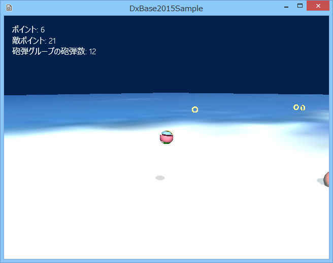

図1006a
いきなり敵が砲弾を発射してくると思いますので、こちらも負けじと発射しましょう。コントローラのBボタンで発射します。
//砲弾と衝突した瞬間の処理
void Player::ShellHitMotion(){
//衝突判定を得る
auto PtrCollision = GetComponent<CollisionSphere>();
//衝突した
if (PtrCollision->GetHitObject()){
auto ShellPtr = dynamic_pointer_cast<ShellBall>(PtrCollision->GetHitObject());
if (ShellPtr){
//相手が砲弾だった
//スコアオブジェクトにイベント送出
auto PtrScoreObject = GetStage()->GetSharedGameObject<ScoreObject>(L"ScoreObject");
PostEvent(0, GetThis<Player>(), PtrScoreObject, L"PlayerHit");
}
//中略
}
}
//--------------------------------------------------------------------------------------
// class ScoreObject : public GameObject;
// 用途: スコアを表示するオブジェクト
//--------------------------------------------------------------------------------------
class ScoreObject : public GameObject{
//イベントマシーン
shared_ptr< EventMachine<ScoreObject> > m_EventMachine;
//中略
public:
//中略
//イベントのハンドラ
virtual void OnEvent(const shared_ptr<Event>& event)override;
//イベントが発生したときの演出関数
//ポイントの加算
void AddPointMotion(size_t sz);
//敵ポイントの加算
void AddEnemyPointMotion(size_t sz);
};
//--------------------------------------------------------------------------------------
// class TorusHitEvent : public EventState<ScoreObject>;
// 用途: トーラスが砲弾に当たったイベント
//--------------------------------------------------------------------------------------
class TorusHitEvent : public EventState<ScoreObject>
{
TorusHitEvent(){}
public:
//イベントステートのインスタンスを得る
static shared_ptr<TorusHitEvent> Instance();
//このイベントが発生したときに呼ばれる
virtual void Enter(const shared_ptr<ScoreObject>& Obj, const shared_ptr<Event>& event)override;
};
//--------------------------------------------------------------------------------------
// class PlayerHitEvent : public EventState<ScoreObject>;
// 用途: プレイヤーが砲弾に当たったイベント
//--------------------------------------------------------------------------------------
class PlayerHitEvent : public EventState<ScoreObject>
{
PlayerHitEvent(){}
public:
//イベントステートのインスタンスを得る
static shared_ptr<PlayerHitEvent> Instance();
//このイベントが発生したときに呼ばれる
virtual void Enter(const shared_ptr<ScoreObject>& Obj, const shared_ptr<Event>& event)override;
};
void ScoreObject::Create(){
//中略
//イベントマシンの構築
m_EventMachine = make_shared< EventMachine<ScoreObject>>(GetThis<ScoreObject>());
//イベントキーとイベントステートを結び付ける
m_EventMachine->AddEventState(L"TorusHit", TorusHitEvent::Instance());
m_EventMachine->AddEventState(L"PlayerHit", PlayerHitEvent::Instance());
}
//イベントのハンドラ
void ScoreObject::OnEvent(const shared_ptr<Event>& event){
//ハンドラ関数呼び出し
//これでイベントが振り分けられる
m_EventMachine->HandleEvent(event);
}
//このイベントが発生したときに呼ばれる
void TorusHitEvent::Enter(const shared_ptr<ScoreObject>& Obj, const shared_ptr<Event>& event){
//ポイント加算
Obj->AddPointMotion(1);
}